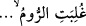
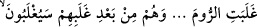
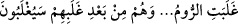
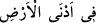
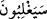
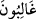
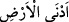

Yukarıdaki âyetlerin “ şeklinde okunması, meşhur kırâattır. “ diye okunması da câizdir. Bu durumda mânâ;
‘İranlılar “Rumlar’ı yendiler. Halbuki onlar,” yâni İranlılar Rumlar’a “galip geldikten
sonra yenilgiye uğratılacaklardır.” Yâni Rumlar eliyle mağlub olacaklardır.’ olur. “ diye okunması da câizdir. Bu durumda mânâ; “Rumlar,”
İranlılar’a “galip geldiler. Halbuki onlar,” yâni Rumlar “bu galibiyetlerinden sonra
yenilgiye uğratılacaklardır.” Yâni müslümanların ellerinde mağlub olacaklardır.
Müslümanların Rumları yenmesi, Ömer b. Hattâb (r.a.) zamanında oldu. Hz. Ömer
Şam beldelerinde onları mağlub etti ve Kudüs’ü ellerinden kurtardı. Bu galibiyet
Allâh’ın dilediği zamana kadar devam etti.
Hikâye edilir ki Kudüs, Hz. Ömer (r.a.) tarafından hicretin on beş veya on altıncı
yılında fethedildikten sonra 477 yıl müslümanların elinde kaldı. Sonra Frenkler oraya
saldırdı ve hicretin 492. yılının Şaban ayında orayı zaptettiler. Hicretin 583. yılının
Receb ayının 17’si Cuma günü Salâhaddîn Yûsuf b. Eyyûb’un eliyle Allah orasını
müslümanlara feth edip açana kadar 91 yıl Frenkler’in elinde kaldı.
Hayret edilecek rastlantılardandır ki Salâhaddîn Eyyûbî 579 yılının Safer ayında
Kudüs’ten önce Haleb’i ele geçirmişti. Şam kadısı Muhyiddîn b. Zekî bir kaside ile
onu medhetti. Kasîdenin bir beyti şöyleydi:
Safer ayında kılıçla Haleb’i fethiniz
Receb ayında Kudüs’ün fethinin müjdecisidir
Onun dediği gibi oldu ve Kudüs, yukarıda geçtiği gibi Receb ayında fethedildi.
Kendisine “Bunu nasıl bildin?” diye soruldu. “İbn Berrecân’ın tefsirinden “Elif. Lâm.
Mîm. Rumlar, (Arapların bulunduğu bölgeye) en yakın bir yerde yenilgiye uğradılar.
Halbuki onlar, bu yenilgilerinden sonra birkaç yıl içinde galip geleceklerdir.”
âyetlerinin tefsirinden çıkardım.” diye cevap verdi. İmam Ebü’l-Hakem İbn Berrecân
el-Endelüsî mezkûr tefsirini 520 senesinde yazmıştı. Halbuki Kudüs o zaman Frenklerin
elinde idi.
Şeyh Sa‘deddîn Hamevî “ (en yakın bir yerde)” ifâdesinden Rumlar’ın
800 yılında mağlub edileceklerini çıkarmıştı. (Gerçekten de o zaman) Timur Rum’ları
yendi.
Fakir (Bursevî) der ki: “Gâlibiyet ve mağlûbiyet, ister yüzler isterse tek basamaklı
sayılar itibariyle olsun üçle dokuz arasında devam eder. “ kelimesinden
anlaşılan “ kelimesinin işâret ettiği gibi ehl-i İslâm bir kere onlara 1089 yılında
galip geldi. “ ifâdesinin işâret ettiği gibi kâfirler 1097 yılında müslümanlara
galip geldiler.
“Hiçbir hâdise yoktur ki ona Allâh’ın kitabında ilm-i hurûf yoluyla işâret olunmasın.